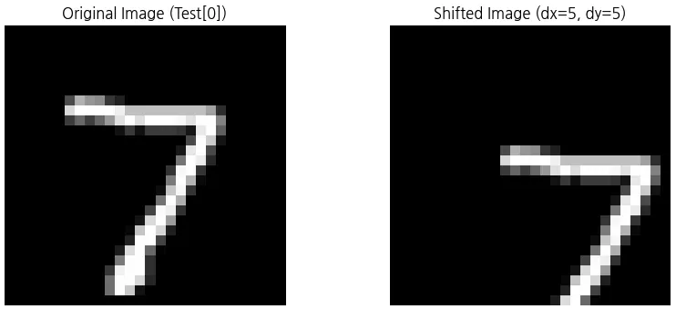
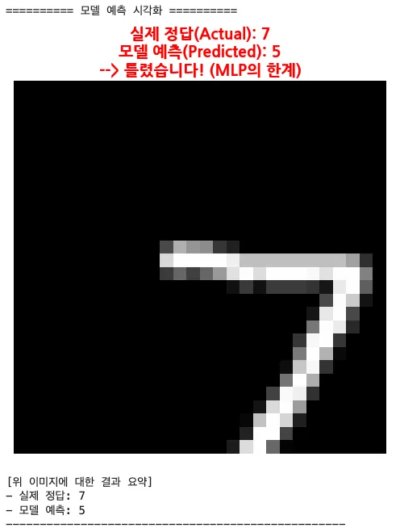

모든 픽셀을 원래 위치보다 오른쪽으로 5칸 옮겼습니다.
Part 2 · CNN Limits
CNN도 못 넘은 벽
CNN은 MLP보다 이미지의 패턴과 위치 변화에 강하지만 완전히 자유로운 것은 아닙니다. 숫자를 오른쪽과 아래로 5칸 옮기자 익숙했던 ‘7’을 틀리게 읽었습니다.
Shift Test · S83–84
MLP의 한계를 극복했을까?
과적합을 막기 위해 CNN을 5번만 학습한 뒤, 테스트 이미지의 숫자 7을 오른쪽 5칸·아래 5칸 이동해 다시 예측했습니다.
같은 숫자를 아래쪽으로도 5칸 옮겼습니다.
사람에게는 똑같은 7이지만, 모델에게는 특징이 나타난 좌표가 크게 달라진 새로운 입력입니다.

Prediction Result · S85
실제 정답 7, 모델 예측 5
CNN도 이동한 숫자를 정확히 알아보지 못했습니다. MLP보다는 위치 변화에 강하지만, 5픽셀이라는 큰 이동까지 자동으로 해결하지는 못했습니다.
사람이 보면 이동 전과 같은 숫자 7입니다.
학습할 때 자주 보지 못한 위치라 다른 숫자로 분류했습니다.

Two Causes · S86
왜 위치가 바뀌면 헷갈릴까?
Conv와 Pooling 층은 특징을 잘 찾았지만, 마지막 분류 과정과 풀링이 감당할 수 있는 이동 범위에는 한계가 있었습니다.
Flatten 뒤 Dense는 위치를 외운다
Conv와 Pooling 층에서 특징을 찾은 뒤 Flatten으로 위치 정보를 한 줄로 펼칩니다. 마지막 Dense 층은 “정중앙에 7이 있는 그림”을 학습했기 때문에 오른쪽 아래의 7은 처음 보는 상황이 됩니다.
MaxPooling의 범위는 작다
MaxPooling(2, 2)는 기껏해야 1~2칸 정도의 미세한 떨림을 커버합니다. 5칸이나 이동하면 “내가 알던 데이터 위치가 아닌데?”라고 헷갈립니다.
따라서 모델은 다양한 위치와 모양의 데이터를 경험할 필요가 있습니다.
Widget Placeholder
같은 숫자를 직접 옮겨 보기
Quick Check
CNN의 한계 확인
MaxPooling(2, 2)가 어느 정도 커버할 수 있다고 설명한 위치 변화는 얼마일까요?
답을 고르면 바로 해설이 나타납니다.
이동한 숫자를 모델이 더 잘 알아보게 하려면 무엇이 필요할까요?
답을 고르면 바로 해설이 나타납니다.